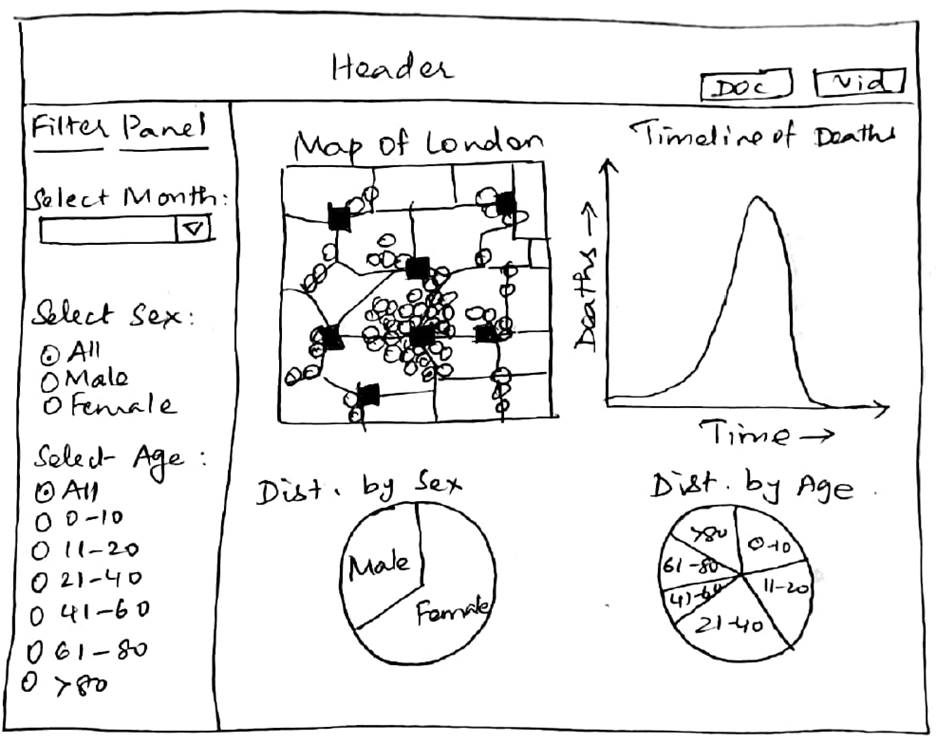
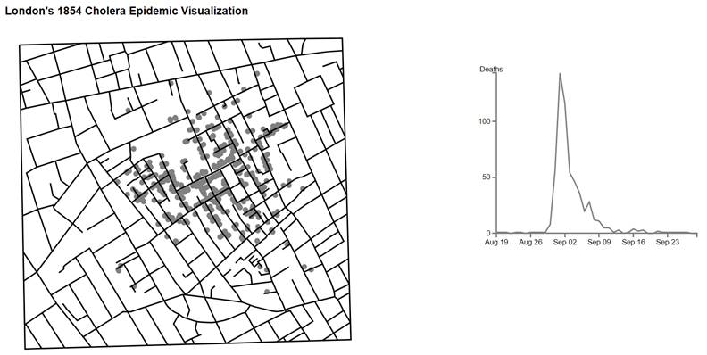
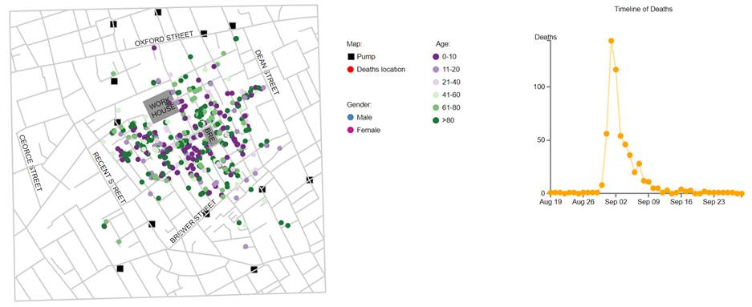
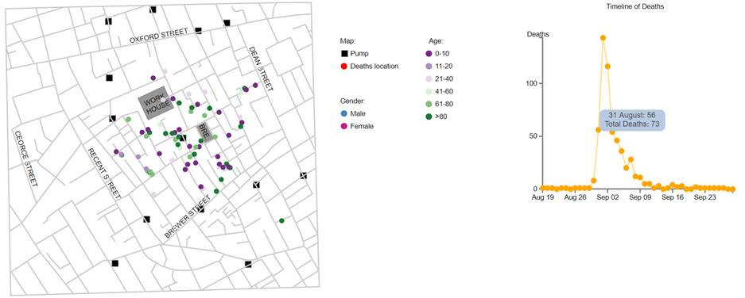
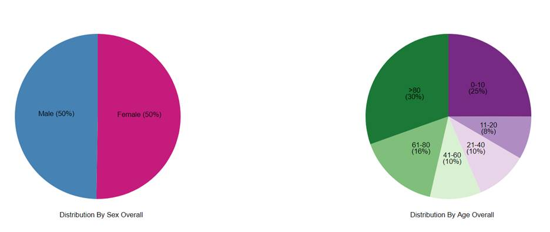
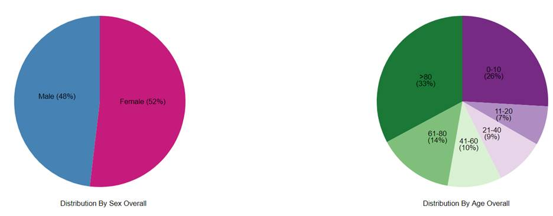

The
London 1854 Cholera Epidemic Viz in D3
Design
Process:
The below sketch is an initial plan to develop the
visualization:

A map shows the streets of London and has the locations
of the pumps and deaths plotted on it. For further data analysis, a line chart
is used to show the timeline of deaths since we can very easily see trends from
a line chart. Pie charts are used to show the overall effect of the disease on
age or sex individually. Pie charts facilitate comparison between categories
easily since area is a channel that is easy to perceive. Comparisons of
percentages are also easy on pie charts.
The left of the visualization was to have a filter
panel using which the map and line chart can be filtered based on month of
death, sex or age of the deceased.
The filter panel could not be achieved due to time
restrictions and difficulties in coding the visualization. A legend was added
to understand the colors used on the map and charts.
Design
Choices:
Layout:
The map can be zoomed by using the mouse wheel, the
touchpad or by using a touch screen. It can also be moved within the svg canvas.
The buttons located above the map can be used to differentiate the plotted
deaths based on sex and age. The marks depicting deaths are color coded
according to sex or age bucket when these buttons are clicked.
The timeline graph was placed on the right of the map
for easy visibility during interaction between the line chart and map. Mouse-over
on a particular date on the timeline only shows those deaths on the map which
occurred prior to or on the selected date on the line chart. Clicking on a date
on the line chart filters the data shown in the pie charts. Only those deaths
that occurred on or before the selected date are displayed in the pie charts.
Two buttons were also included on the right corner of
the visualization to open the documentation for the visualization and the YouTube
video explaining the visualization.
Color:
Since most of the data is categorical, I have chosen categorical
or diverging-sequential colors. Red is used to plot the deaths on the map to
make it stand out from the streets and pumps. Blue and pink colors are used to
display data by sex (using the stereotypical blue color for male and pink for
female for easier visual understanding). A set of diverging purple-green diverging
colors are used to code deaths by age buckets. The same color schemes are used
to code data in the map as well in the pie charts so that the data can be
easily related between charts.
All colors chosen are color blind safe (from www.colorbrewer2.org).
Data:
This visualization uses a json file to plot the streets in the map
and csv files to plot the deaths and location of the pumps on the map, the
number of deaths on each day and death classification by age and gender. No
modifications were done to the files or to the data stored in them.
Visualization development:
The screenshot below depicts the initial stages of the layout of
the visualization with the deaths plotted on the map and the line chart.

The color used to plot
the deaths was changed to red so that the plotted points can be more easily
perceived against the streets of the map. Circles were also drawn on the line
chart to clearly see the days on which deaths occurred and the corresponding
number of deaths.
Mouse over was
implemented on the line chart – hovering over any date on the line chart will
filter the data on the map to only show deaths that occurred on or before that
date.
On the completed viz, without
filtering by hovering on the line chart:

After filtering by
hovering on 31st August:

The pie charts show deaths by sex and age
individually. From these charts we can draw conclusions on which gender is more
affected overall or about which age groups were more susceptible to contracting
the then fatal disease.
Without filtering by clicking on the line chart:

After filtering by clicking on 1st
September:

Analysis
from the visualization:
From the visualization, we see that, as concluded by
Dr. Snow, there is a higher concentration of deaths around a few particular
water pumps, especially the pump right in the middle of the map.
Also, there seems to be a higher concentration of
female deaths around this central pump. This could be indicative that more
women were exposed to the pump than men. However, on the whole, the number of
female and male deaths is almost equal.
The number of deaths also rise quite rapidly until the
1st of September. Beyond that date, there is a steady decline in the
number of casualties, probably due to steps taken to replace the water pump or
due to better prevention and hygiene measures.
The number of deaths in males and females is almost
equal, as can be seen form the pie chart depicting distribution of deaths
according to sex.
We also see that there are more casualties who are 80
years and older (30%). The second highest age category for deaths is children
less than 10 years of age (25%). Understandably, people in these age categories
have weaker immune systems and are more susceptible to the disease. In all
other age groups, the number of casualties is lesser.
References:
http://colorbrewer2.org/#type=diverging&scheme=PuOr&n=6
https://www.color-blindness.com/coblis-color-blindness-simulator/
https://github.com/thfield/johnsnow
http://thfield.github.io/johnsnow/
http://bl.ocks.org/enjalot/1203641